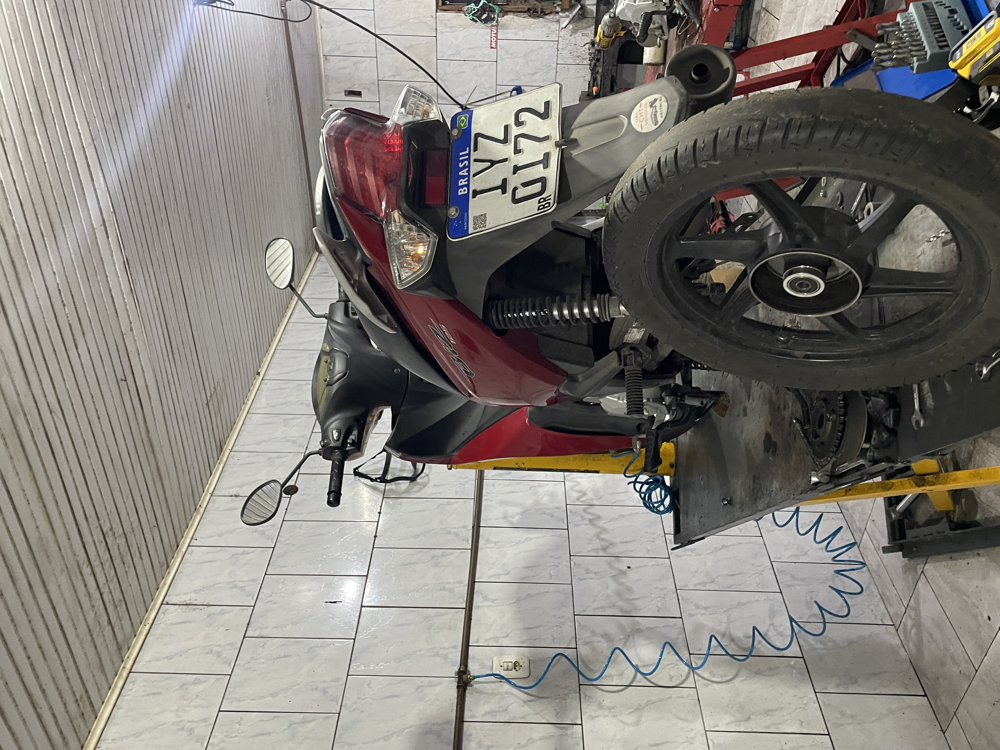

🏍️ Dioni Motos Racing

Todos os tipos de serviços para sua moto, com cuidado, experiência e atenção em cada detalhe.


🚜 Dioni Terraplanagem

Serviços de terraplanagem, escavação e preparação de terrenos para diferentes tipos de projetos.


📍 Onde estamos
Três Coroas - RS
Bairro Sander
Rua Visconde de Mauá